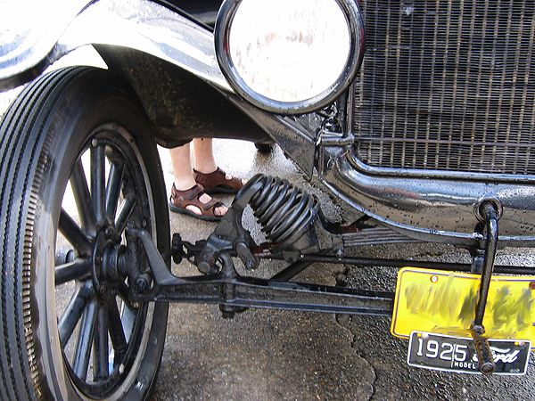

Mecanismos Dependientes
En cualquier caso, tanto en suspensiones dependientes
como independientes es habitual conectar indirectamente
las ruedas de un mismo tren con barras estabilizadoras, mecanismos capaces de limitar la inclinación de la carrocería mediante
la transmisión a las ruedas interiores de parte
de la fuerza de compresión ejercida por la fuerza centrífuga sobre las exteriores.
Relacion con otro mecanismo
En este sentido su funcionamiento se opone al de los
sistemas dependientes como el eje rígido o el eje De Dion en los que las ruedas están sólidamente
enlazadas, de modo que el desplazamiento de una
rueda necesariamente genera
modificaciones parásitas en la geometría de la otra.
La Puerta de los carros
| Tabla avanzada |
Cabecera MUltiples columnas |
| primera cola |
segunda cola |
| Motores diesel |
motores gasolina |
Comentario |
| vinicio |
veletanga |
Hola mundo |
| Elemento de impuslo |
Gasolina |
combustible fosil |
| Pie de tabla
|
|
Mecanismos De presicion
La dirección es el conjunto de órganos que permiten a cualquier vehículo variar su trayectoria para seguir el rumbo deseado. Para esta finalidad en general los sistemas de dirección utilizan las ruedas del vehículo, bien modificando su orientación.
